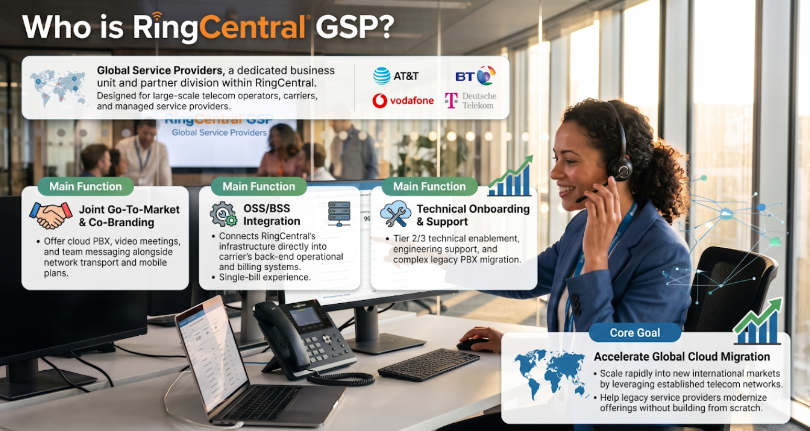
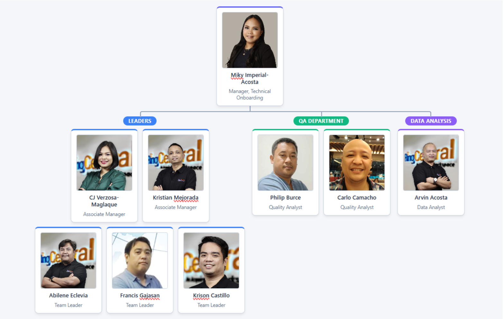

Welcome to GSP TO Onesource
This is your centralized hub for partner updates, quality assurance tools, and process workflows. Click any menu item above to navigate smoothly across sections.

What is GSP TO Onesource?
Given RingCentral GSP's global mandate to deliver localized communications solutions across diverse provider environments, customized partner support is a core operational requirement. The OneSource platform is designed to elevate our existing support framework by streamlining how partner-specific business requirements are translated and communicated to technical onboarding advisors.
Key Operational Value Drivers
- Streamlined Technical Delivery: Standardizes the intake and translation of complex client business needs into clear, actionable technical specifications.
- Tailored Support at Scale: Enables dedicated, customized partner alignment without compromising global deployment velocity.
- Enhanced Advisor Enablement: Equips technical onboarding teams with structured, centralized insights to accelerate time-to-value for enterprise partners.
This initiative optimizes communication channels between business and technical stakeholders, ensuring consistent execution across complex global deployments.
Our Leader
Miky leads the team with an optimistic, vision-driven approach, aiming to standardize and maximize the viability of RingCentral’s partner relations.
She is supported by Associate Managers CJ Verzosa-Maglaque and Kristian Mejorada, along with Team Leaders Francis Gajasan, Krison Castillo, and Abilene Eclevia.
To maintain the highest quality in partner onboarding, she handpicked top talents Philip Burce and Carlo Camacho to drive the process.
Manning the Data Analysis is Arvin Acosta.
The Organizational Chart

GSP Bulletin
Content and updates for the GSP Bulletin section will be displayed here.
Appreciation Wall
A place to celebrate wins and give kudos across the team.

Arvin Acosta has been with Ringcentral for over 5 years and had been consistent with performing above average for his role. With Arvin's expertise, GSP TO unit has been delivering its expected results
Your hard work and dedication is deeply appreciated!
Arvin, keep up the good work 👌
Victor Villanueva has been simply been amazing on all facets of being an RRT for GSP Technical Onboarding. Victor is very technically adept in Ringcentral products so basically that makes himself a walking onesource 😁
His hard work has been remarkable which bestowed him once that coveted Ringcentral Excellence award. He truly deserved that!
Victor, please keep it that way. You have no idea how much you inspire us!
AT&T Office At Hand
Resources, documentation, and tools for AT&T Office At Hand.
AT&T Office At Hand History
AT&T Office@Hand is a cloud-based Unified Communications as a Service (UCaaS) platform provided by AT&T in partnership with RingCentral. It serves as AT&T’s lead offering for business voice, video conferencing, team messaging, and contact center solutions, running directly over AT&T’s mobile, fiber, and SD-WAN networks.
Key Milestones & Evolution
-
Partnership Foundations & Early Growth (2011–2018)
- Pioneering Strategic Alliance: AT&T was one of RingCentral’s earliest major service provider partners, creating AT&T Office@Hand to transition business customers away from legacy copper landlines and hardware-heavy PBX systems.
- Enterprise Expansion (2018): AT&T and RingCentral extended their agreement to bring mobile-first cloud communications to large enterprises and regulated vertical sectors (such as government, healthcare, and finance) through AT&T’s direct and indirect sales channels.
-
Lead UCaaS Offering & Portfolio Streamlining (2019–2022)
- Primary UCaaS Solution (2019): In November 2019, AT&T designated Office@Hand as its lead offer for UCaaS across its broad Voice and Collaboration portfolio.
- Network & App Integration (2020–2021): AT&T integrated Office@Hand with its 5G, Fiber, and SD-WAN infrastructures to ensure lower latency and higher call quality. They also enhanced video meeting capabilities and embedded deep integrations with Microsoft Teams and Google Workspace.
- Portfolio Consolidation (2022): AT&T streamlined its business communications strategy, consolidating multiple resale partnerships to make Office@Hand its primary white-labeled cloud communications engine for business clients.
-
AI & Omnichannel Contact Center Expansion (2025–Present)
- AI-Powered Contact Center Launch: AT&T expanded the Office@Hand portfolio by integrating RingCentral’s RingCX (an AI-first omnichannel contact center) and RingSense / ACE (conversational intelligence and speech analytics).
- Unified Agent Experience: The upgrade enabled businesses to combine front-office team messaging and back-office contact center agents under a single solution powered by generative AI call routing, automated sentiment analysis, and real-time coaching tools.
- For AT&T: Allows the telecom giant to provide a feature-rich, cloud-native communication stack deeply integrated with its nation-wide wireless, 5G, and enterprise fiber infrastructure without building proprietary UCaaS software.
- For Business Customers: Delivers a single-bill solution combining AT&T connectivity and support with RingCentral’s enterprise cloud phone, video, messaging, and AI contact center platform.
Core Value Proposition
Brightspeed Voice +
Resources and updates for Brightspeed Voice +.
Brightspeed Voice+ History
Brightspeed Voice+ is a cloud-based Unified Communications as a Service (UCaaS) solution offered by Brightspeed in strategic partnership with RingCentral.
Continuing the trend seen with other major regional carriers (like Frontier with RingCentral, TELUS Business Connect, and AT&T Office@Hand), Brightspeed pairs RingCentral's cloud communications software with its high-speed fiber-optic network across its 20-state operating footprint.
Key Milestones & Evolution
1. Carrier Formation (October 2022)
- Creation of Brightspeed: Brightspeed was officially established in October 2022 after private equity firm Apollo Global Management acquired Lumen Technologies’ incumbent local exchange carrier (ILEC) assets for $7.5 billion.
- Fiber Overhaul Target: Operating as the nation’s fourth-largest fiber broadband builder, Brightspeed launched a multi-billion dollar initiative to replace legacy copper networks with high-speed fiber internet for millions of residential and business customers.
2. Official Product Launch (April 2024)
- Strategic Partnership with RingCentral: On April 2, 2024, Brightspeed officially announced the launch of Brightspeed Voice+ powered by RingCentral.
- Integrated Suite: The product was created to give enterprise, mid-market, and small business clients an all-in-one suite combining cloud telephony, HD video meetings, team messaging, eFax, and cloud storage into a single platform.
- API & Workflow Flexibility: Brightspeed Voice+ was equipped with RingCentral's open APIs, enabling deep integration with popular enterprise applications like Salesforce, Microsoft Teams, Google Workspace, ServiceNow, and Zendesk.
3. AI Capabilities & Connectivity Bundling
- AI-Powered Collaboration: From launch, Brightspeed Voice+ incorporated RingCentral's conversational AI features, including automated transcription, real-time meeting summaries, and advanced analytics for IT administrators.
- Broadband Integration: Brightspeed bundled Voice+ with its symmetrical Dedicated Internet Access (DIA) and Business Fiber solutions, providing business clients with single-provider billing and quality-of-service support.
Core Value Proposition
- For Brightspeed: Allowed the newly formed telecom carrier to quickly go to market with an enterprise-grade UCaaS and AI collaboration platform without spending years developing proprietary cloud softswitch software.
- For Business Customers: Delivered a modern, reliable cloud communication system running over Brightspeed's fiber network, supporting remote and hybrid workforces with flexible hardware (such as Poly IP desk phones) and cloud app access.
BT Cloudwork
Resources and documentation for BT Cloudwork.
COX Business Connect
Resources and updates for COX Business Connect.
Frontier with Ringcentral
Resources and guidance for Frontier with RingCentral.
RC UK
Specific documentation and updates for RingCentral UK.
Telus Business Connect
Resources and documentation for Telus Business Connect.
Zayo UC+
Resources and guides for Zayo UC+.
QA Corner Overview
Welcome to the main QA Corner section. Use the dropdown to jump directly to specialized QA pages.
CSAT Rockstars
Highlighting our top CSAT performers and recognition milestones.
Process Library
Standard operating procedures, reference guides, and workflow charts.
Quick Reminders
Key operational reminders, daily highlights, and priority call-outs.
QA Wall of Fame
Honoring high quality standards and top audit scores.
QA Updates and Announcements
Latest announcements regarding quality guidelines and policy changes.
2026 Updates
Quality Risk Management
Frameworks, mitigation protocols, and compliance procedures.
QA Forms and Versions
Downloadable evaluation forms, audit rubrics, and version history logs.
GSP TO Tools
Access productivity tools and operational utilities.
| Tool Name | Link | Tool Description |
|---|---|---|
| GSP Quick Reference Guide | GSP Quick Reference Guide | This is where you can see updated information about Brands' directories and some processes |
| GSP Account Verification Guide | GSP Account Verification Guide | Access this to know more about our established process for verifying clients using SCP |
| Timezone Setter | Timezone Setter | This is your guide when it comes to making sure you are setting up the proper timezone of your customer's location. Take Note : Always look at the details under IANA Identifier column |
| Telus Business Connect Updated Feature Matrix | Telus Business Connect Updated Feature Matrix | This is where you can access features available based on Telus Business Connect customer's plan |
| SFDC GSP TO Call Template | SFDC GSP TO Call Template | This is your guide in making sure you are able to have proper onboarding call flow as well as ensure that you are able to cover essential tasks/topics within the whole session. |
| Portability Checker | Portability Checker | Instead of directly submitting the number the customer needs to port in using Service portal, you can first use this to see if the number is portable |
| RC Support Site | RC Support Site | This is the RC's main support site. You can visit this site for some support articles that you can find helpful in supporting your customer |
| Provisioning Guide Microsite | Provisioning Guide Microsite | When it comes to provisioning, this is your one of your bestfriends especially for BYOD devices |
| Care Connect Hub | Care Connect Hub | Usually used by Technical Team, this can be a source of information for you to support your customer during your onboarding |
| RC Supported Devices (BYOD) | RC Supported Devices (BYOD) | If a customer wants to provision his BYOD, you may want to look at this first to qualify his device |
| RC 411 | RC 411 | This will take you to the RC 411 page where latest releases and updates will be found. |
| TCR Registration Checklist | TCR Registration Checklist | Access this to be guided on what pre requisites the customer must have before registering for SMS feature |
RC & Acquire Helplines
Directory of escalation pathways, support desks, and key contacts.